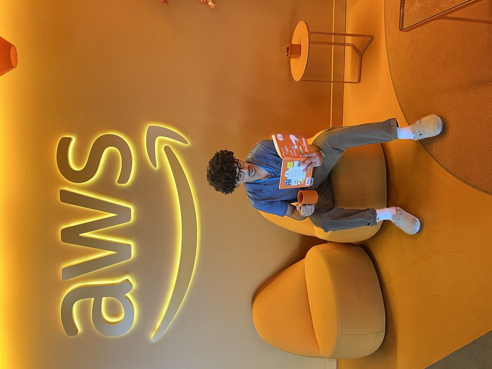
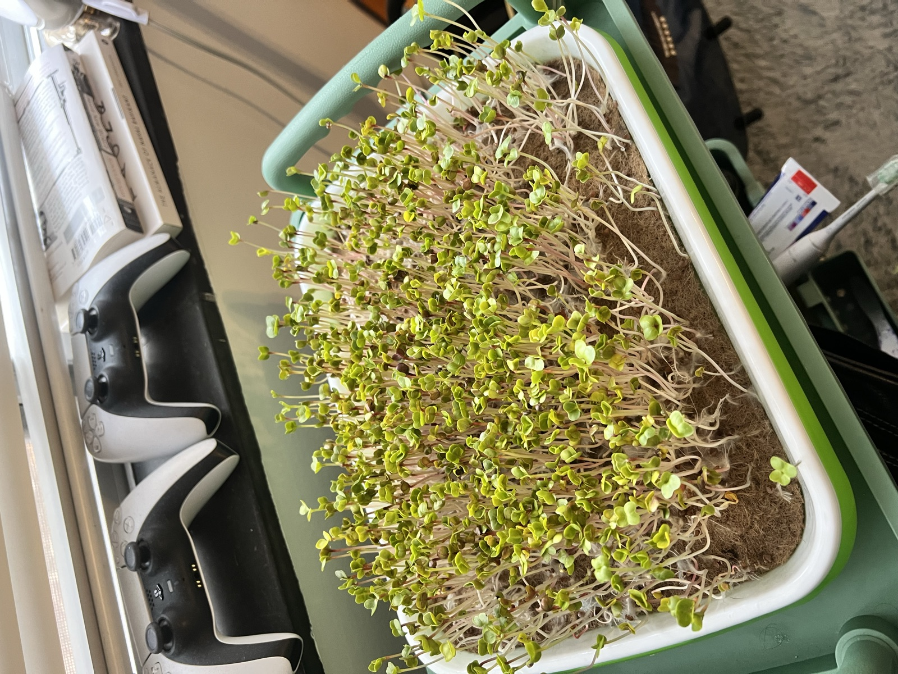
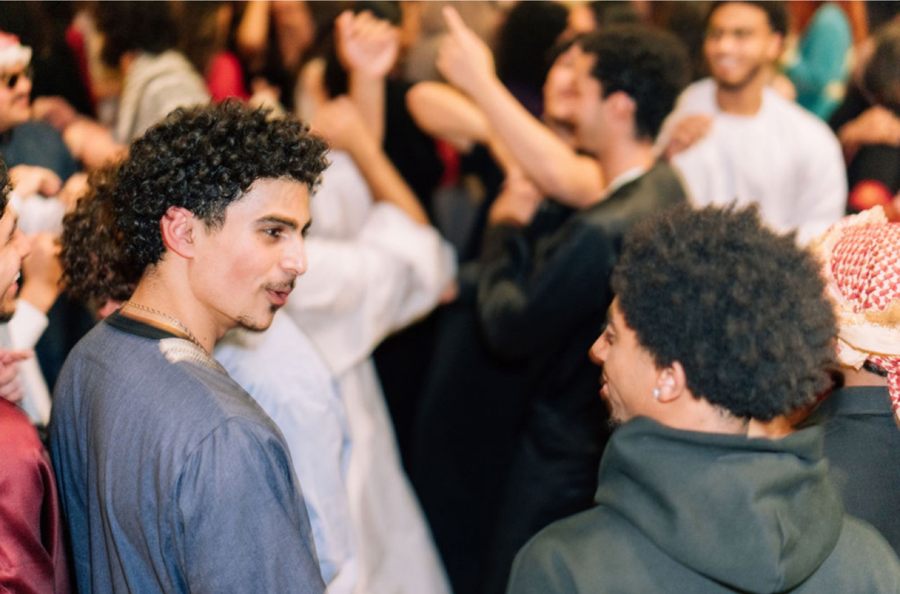

Welcome
Hey, I'm
Haitham.
I'm a [your title / description] based in [your city]. I care about [things you care about] — and this is my little corner of the internet.
More about me →Projects
Currently working on:
This personal site
Project One
A short description of what this project does and why you built it.
Project Two
A short description of what this project does and why you built it.
Project Three
A short description of what this project does and why you built it.
Project Four
A short description of what this project does and why you built it.
Photos


